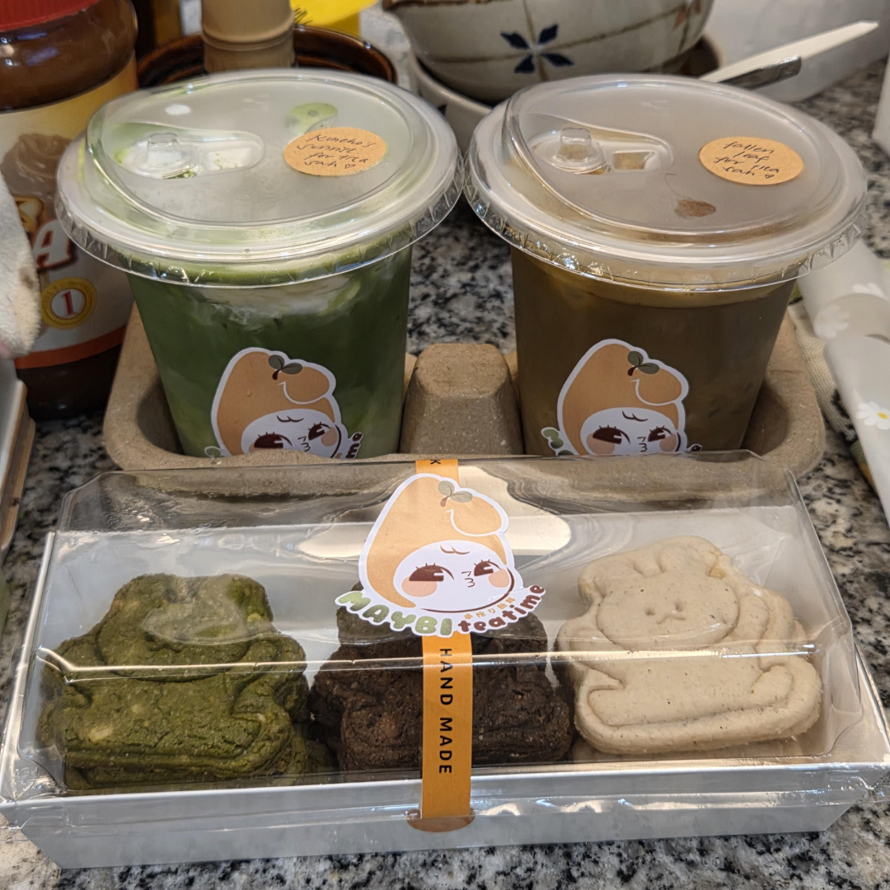

Maybi [ /ˈmeɪ.bi/ ] Tea Time is a home-based slowbar serving specialty matcha, hojicha, and wakoucha creations. we infuse a variety of teas and tisanes, fruits and florals, as well as incorporate local and international flavors in our handcrafted drinks. each drink is freshly hand-whisked upon ordering.
We are also known for our sugarbunnies which are bunny-shaped sugar cookies with unique flavor combinations, the perfect pair to our maybi bunny blends.
"Maybi" is mainly coined from "Maple Bunny" and "May Baby," inspired by the owner's daughter and her love for bunnies.
We specialize in themed events and custom drinks curated for the specific theme. So far, we've done a frieren-themed bar takeover and a vtuber live acoustic charity event.
We are located in Sampaloc, Manila, near Welcome Rotonda and Chinese General Hospital. Our usual opening hours is 2pm-12am daily unless announced otherwise.
For the meantime, we only accept pick-ups and deliveries. We're also on GrabFood, and we do occasional pop-ups. A physical space is in the works and is set to open in mid to late 2026.